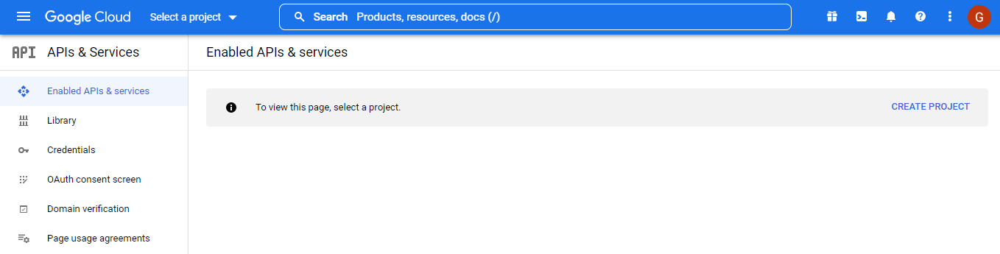
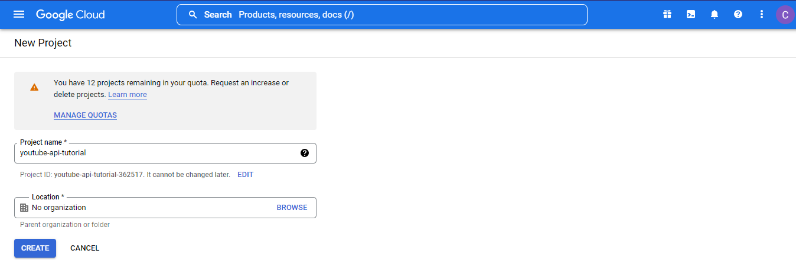
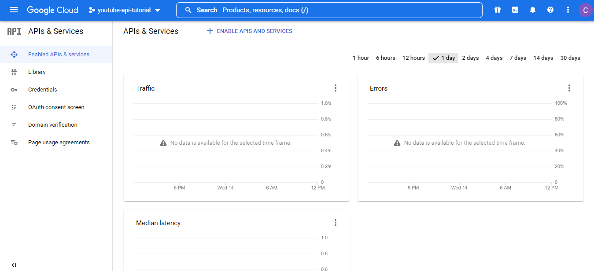
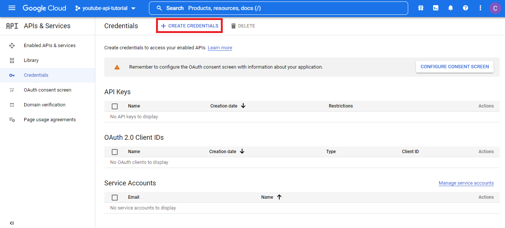
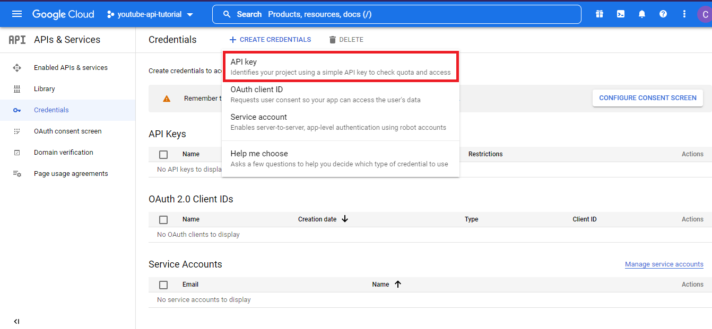
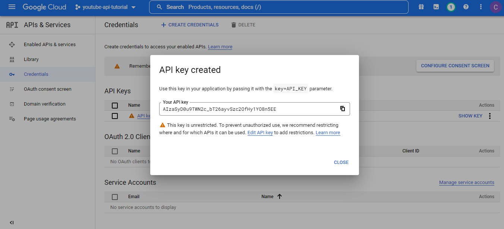
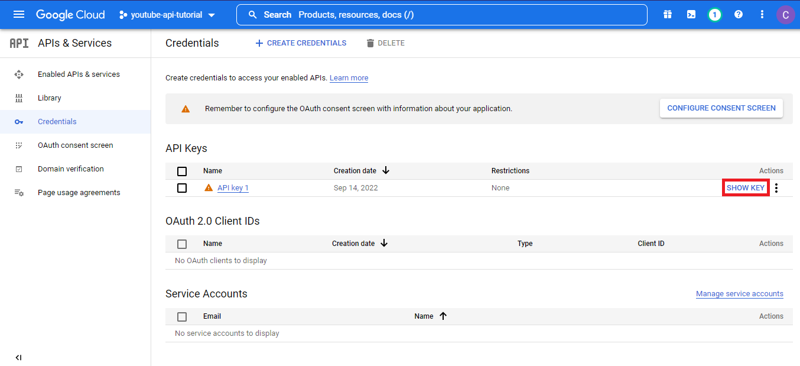

Getting Credentials
Here is how we can get credentials to use the YouTube API. Make sure you are logged in to a Google account before getting started.
Creating a Google Cloud Project
Let’s go to the Google Developer Console and create a project.

Choose a name for your project and press “Create Project”.

Select your Project
Return to your dashboard and make sure you’ve selected your project - this should happen automatically.

Credentials Page
Click the “Credentials” tab on the side navigation.

Generate API Key
Press the “Create Credentials” button at the top of the page.
Select “API Key” from the list of options.

Your API Key should be generated in just a few seconds. This key grants us permission to use Google’s APIs

and in case you forget it, you can find your key here.

Google API Client
To get started, we must import the client and provide the following information:
serviceName: where are we requesting information from?version: v3 is the most up-to-date as of publishingdeveloperKey: this is string of characters from before
import googleapiclient.discovery
youtube = googleapiclient.discovery.build(
serviceName = "youtube",
version = "v3",
developerKey = API_KEY # use your credentials from before
)Making Requests
There are only two required parameters when requesting comments from the YouTube API:
part:"snippet": details about the comment (author, likes, etc.)"id": unique identifier for the comment
idorparentID: ID for the video or parent comment for which we would like responses.
For this example, we will be requesting the "snippet" (details) for comments on a specified video.
I’ll be using the following video by 3Blue1Brown, though the process will be identical if you would like to follow along with another video.
Let’s take a look at the URL for this video:
\[ \text{https://www.youtube.com/watch?v=}\underbrace{\text{8idr1WZ1A7Q}}_\text{Video ID} \]
While we could easily copy the video ID from the URL and paste it directly into our code, I plan to automate this process for a number of videos and would save time by putting this into code.
Let’s take the URL of our selected video and extract the ID using the split() function.
# URL of the selected video
video_url = "https://www.youtube.com/watch?v=8idr1WZ1A7Q"
# extracts the ID from the given URL
video_id = video_url.split("watch?v=")[1]Now we have everything we need to define our request. The following code uses our API client from before to request comments from the YouTube video we selected above.
request = youtube.commentThreads().list(
part = "snippet",
videoId = video_id
)The request is then processed as follows
request.execute()["items"]Interpreting Responses
After processing the request, the API returns a list of elements in the following structure.
{
'kind': 'youtube#commentThread',
'etag': 'CWbEkHqHXRtzPDpMF8Oiy-IJ2i4',
'id': 'Ugx5qRkWFxUWVad4dNF4AaABAg',
'snippet': {
'videoId': '8idr1WZ1A7Q',
'topLevelComment': {
'kind': 'youtube#comment',
'etag': 'LeBHFSGXBuJ9_wl3QGeF04Qc714',
'id': 'Ugx5qRkWFxUWVad4dNF4AaABAg',
'snippet': {
'videoId': '8idr1WZ1A7Q',
'textDisplay': '<a href="https://www.youtube.com/watch?v=8idr1WZ1A7Q&t=5m30s">5:30</a> Nikola lol',
'textOriginal': '5:30 Nikola lol',
'authorDisplayName': 'A Human',
'authorProfileImageUrl': 'https://yt3.ggpht.com/eXPf7FrnH0vv0zrcl8foRNtYC3fFb1Kmjb-N528k00lLOk21sNbBBxTsY4q3ZhrvAXGDYt25NjE=s48-c-k-c0x00ffffff-no-rj',
'authorChannelUrl': 'http://www.youtube.com/channel/UCfRur4T6f8Lb3_STxB8AotQ',
'authorChannelId': {
'value': 'UCfRur4T6f8Lb3_STxB8AotQ'
},
'canRate': True,
'viewerRating': 'none',
'likeCount': 0,
'publishedAt': '2022-09-13T03:04:25Z',
'updatedAt': '2022-09-13T03:04:25Z'
}
},
'canReply': True,
'totalReplyCount': 0,
'isPublic': True
}
}We can load the response into a pandas dataframe
Let’s take a look at the first few rows of our data.
| authorDisplayName | textOriginal | likeCount | |
|---|---|---|---|
| 0 | A Human | 5:30 Nikola lol | 0 |
| 1 | Farzad Shirazifard | please part 3? | 0 |
| 2 | darci peeps | Can we do something similar for 5 star systems? | 0 |
| 3 | Magget_ | The hyperprobability of this man pulling any bitches is less than zero | 1 |
| 4 | Raj Tanwar | This has to be the best visual explanations for Binomial distributions. | 0 |